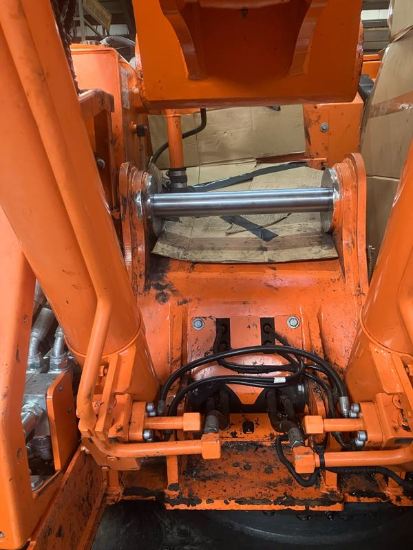
GraafmachinesGraafmachine: giekvoet ter plaatse gekotterd 2 foto'sProjecten: kotterwerk in de praktijk
Herstellingen aan graafmachines, wielladers, kraanarmen, grijpers, bakken en snelwissels, ter plaatse of in uw werkplaats uitgevoerd. Klik op een project voor alle foto's, of start een video.
Ons beste voorbeeld
1. Opgelast en terug rond gekotterd 2. Nieuwe bus inpersen 3. Klaar: bus gemonteerd
Versleten draaipunt: opgelast, gekotterd en een nieuwe bus
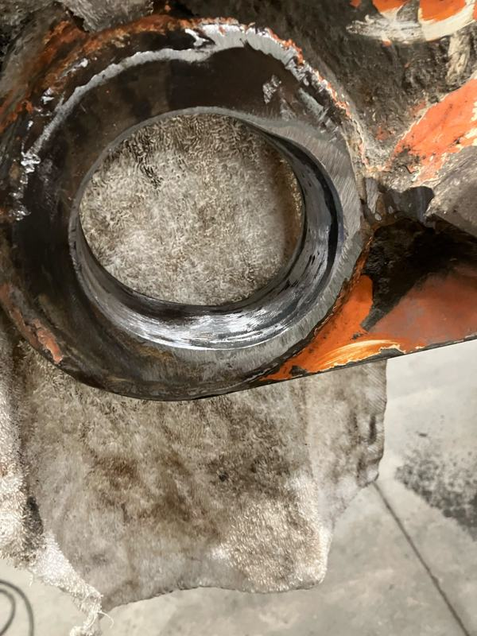
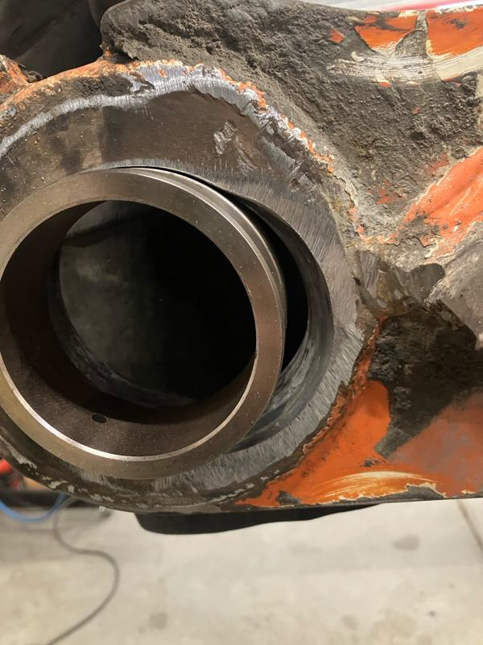
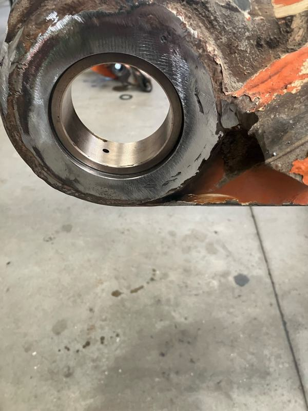
Het probleem
Het draaipunt was na jaren werk uitgesleten en niet meer rond. Daardoor had de pen speling. Een nieuw onderdeel kost veel geld.
Onze aanpak
We lasten het gat op, kotterden het terug rond en op maat en persten er een nieuwe bus in.
Het resultaat
De nieuwe bus zit strak in het gat, klaar voor de pen. Het onderdeel hoefde niet vervangen te worden.
Alle projecten
RC-Tech komt bij u ter plaatse voor mobiel kotteren, oplassen van gaten en bussen vervangen. Bekijk hier enkele realisaties.


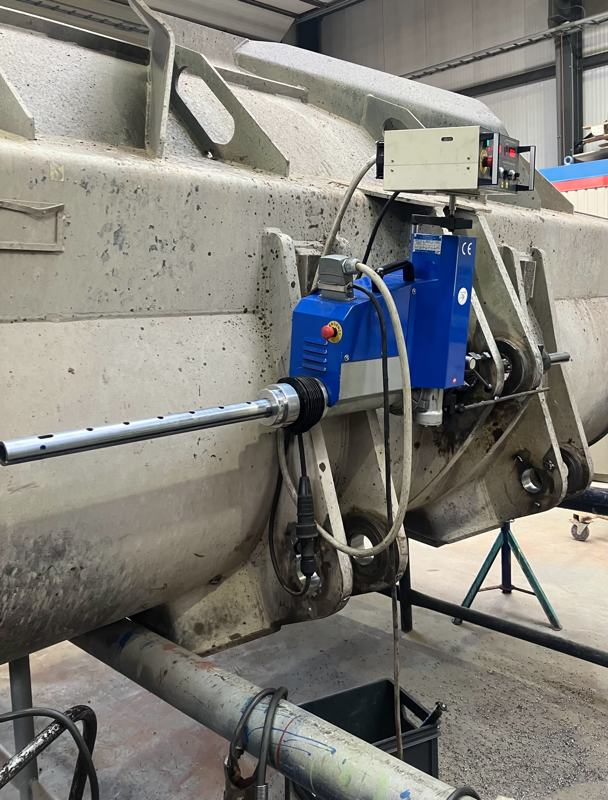
LijnkotterenOphangogen in één lijn gekotterd 2 foto's

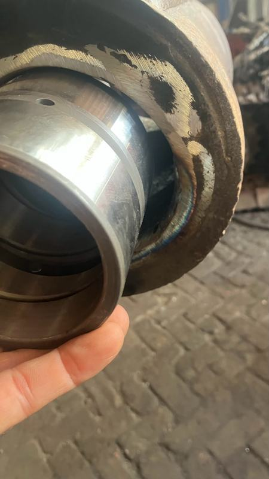
BussenGat gekotterd en nieuwe bus geplaatst 2 foto's

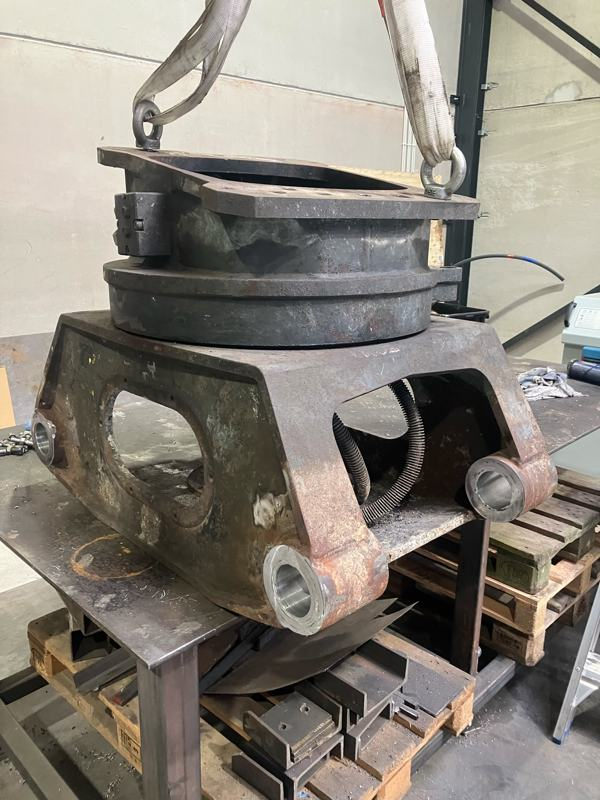
GrijpersRotatorhuis: ogen opgelast en gekotterd 1 foto
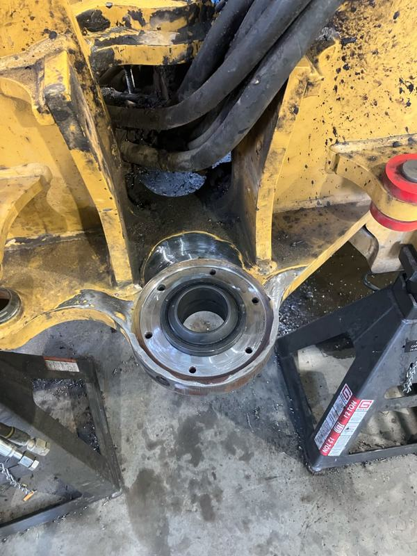
WielladersWiellader: lagerhuis van het knikpunt hersteld 1 foto
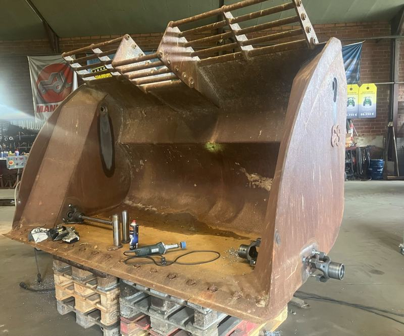
BakkenShovelbak: ophangpunten in één lijn gekotterd 1 foto
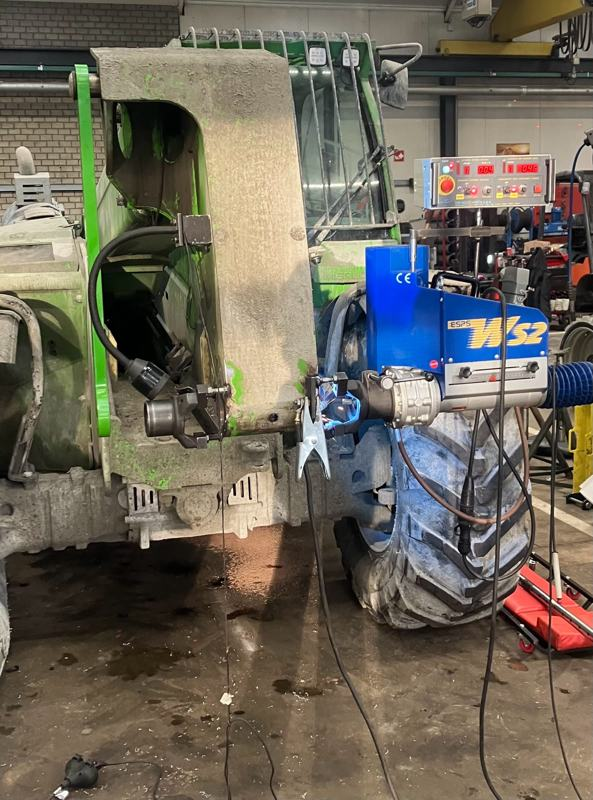
VerreikersVerreiker: draaipunt van de giek opgelast 1 foto
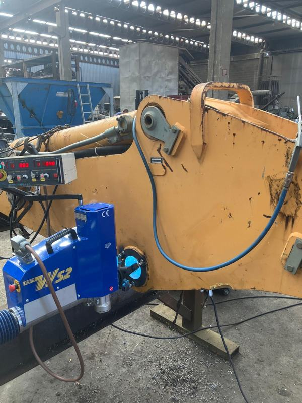
GraafmachinesGiek: draaipunt automatisch opgelast 1 foto
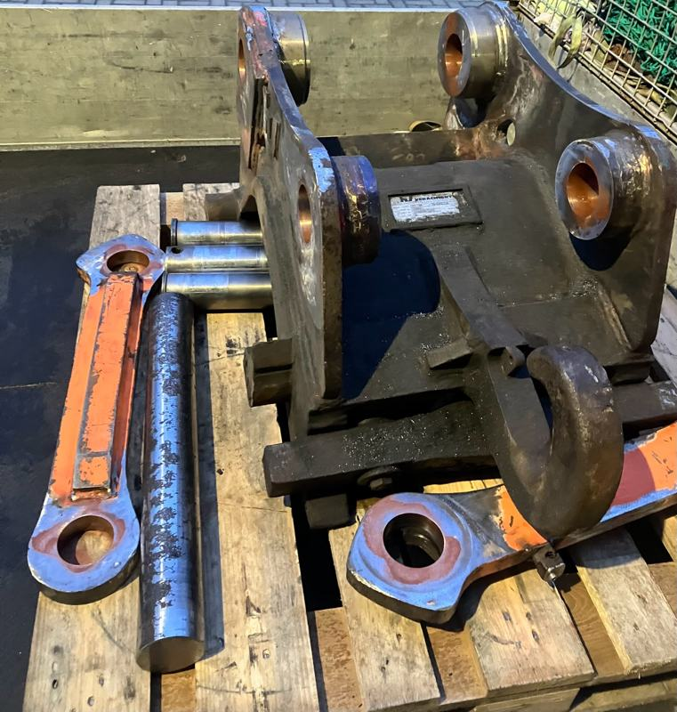
SnelwisselsSnelwissel en bakstangen: nieuwe bussen en pennen 1 foto
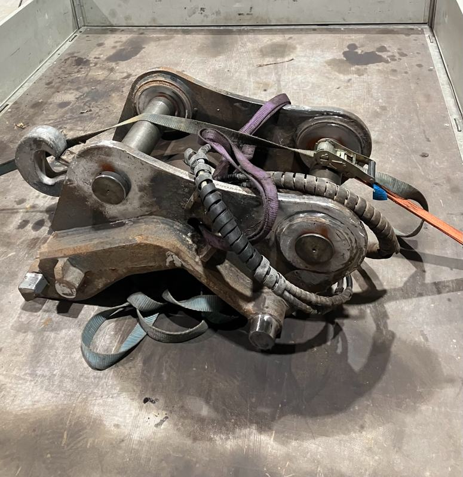
SnelwisselsSnelwissel: ogen hersteld 1 foto
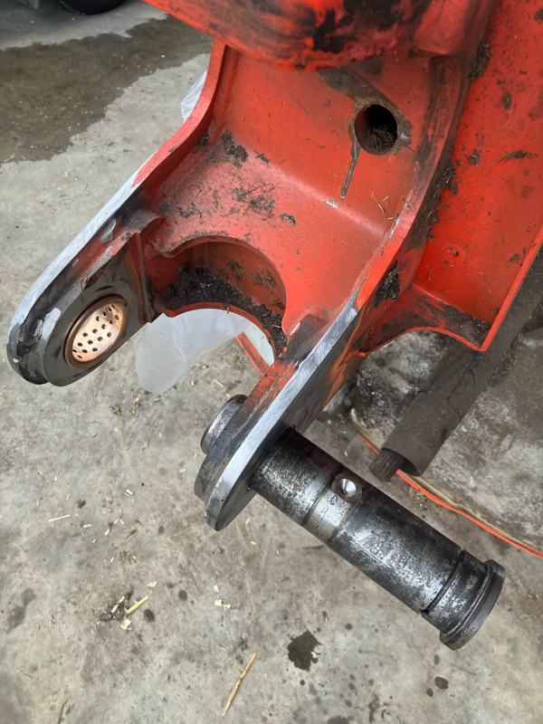
BussenArm van een graafmachine: nieuwe bronzen bus 1 foto
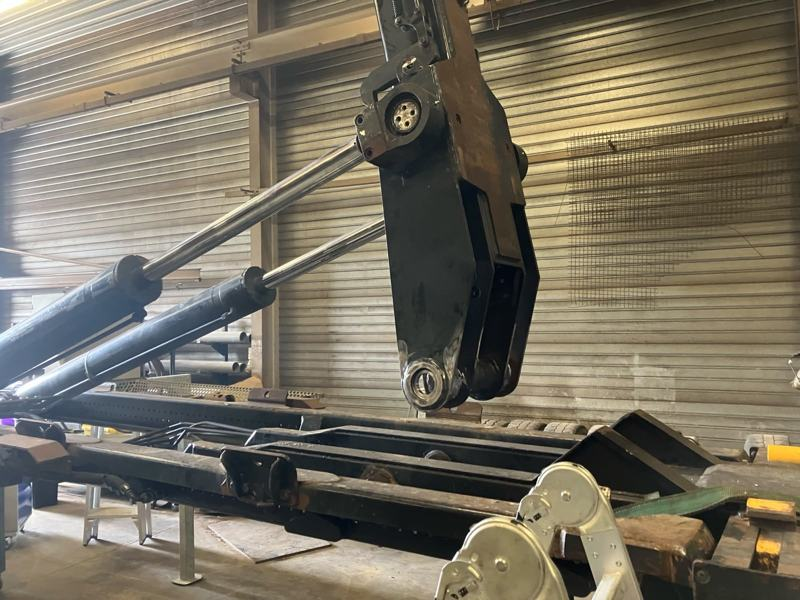
HaakarmenHaakarmsysteem: draaipunt gekotterd 1 foto
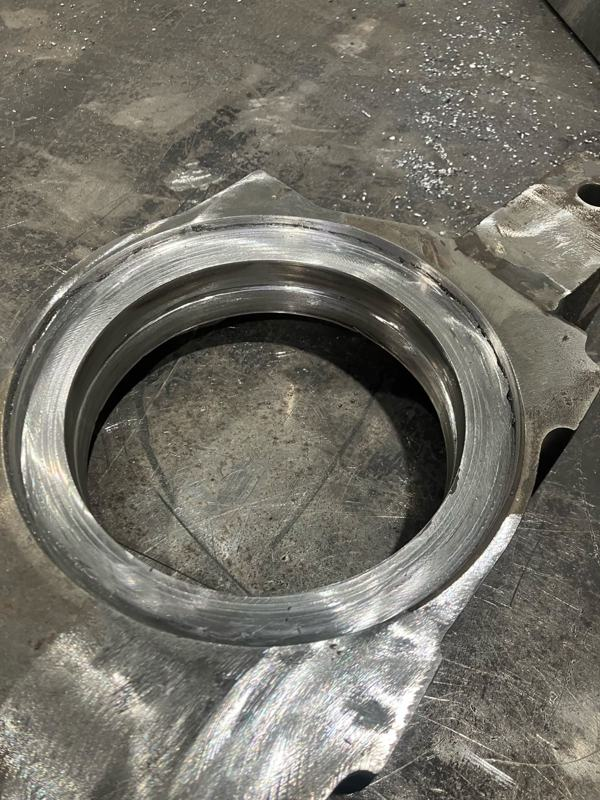
Grote boringenGrote boring gekotterd en vlakgedraaid 1 foto KraanarmenKraanarm: oplassen en kotteren van een uitgesleten draaipunt 3 foto's
KraanarmenKraanarm: oplassen en kotteren van een uitgesleten draaipunt 3 foto's

 KraanarmenKraanarm: interne slijtage hersteld 3 foto's
KraanarmenKraanarm: interne slijtage hersteld 3 foto's

 KraanarmenPen-en-gatverbinding: van slijtage tot nieuw gat 3 foto's
KraanarmenPen-en-gatverbinding: van slijtage tot nieuw gat 3 foto's

 GraafmachinesGraafmachine: gaten vergroten en slijtage verwijderen 7 foto's
GraafmachinesGraafmachine: gaten vergroten en slijtage verwijderen 7 foto's


 GrijpersGrijper: meerdere gaten in één lijn 5 foto's
GrijpersGrijper: meerdere gaten in één lijn 5 foto's


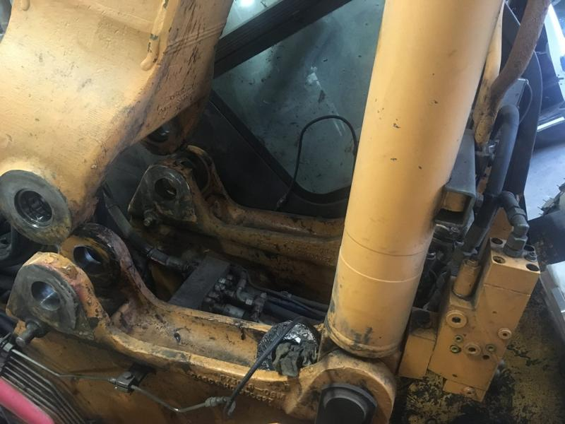
KraanarmenRecyclagemachine: draaipunten kraan hersteld 6 foto's


 BakkenOverkiepbak: draaipunten gekotterd 5 foto's
BakkenOverkiepbak: draaipunten gekotterd 5 foto's


 BussenMontage van bussen 6 foto's
BussenMontage van bussen 6 foto's


 BakkenGraafbak: uitgesleten gaten hersteld 5 foto's
BakkenGraafbak: uitgesleten gaten hersteld 5 foto's


 WielladersWiellader: kotteren op locatie 5 foto's
WielladersWiellader: kotteren op locatie 5 foto's


Meer video's op ons YouTube-kanaal.
Ook zo'n herstelling nodig?
Stuur ons een e-mail met foto's van uw draaipunt.